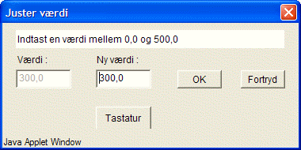

Analoge værdier kan justeres fra en skematisk side eller fra Enhedsoversigten.
Sådan justeres en analog værdi:
1 Vis siden, der indeholder den værdi, der skal justeres, og klik på den knap eller det billede, hvorfra værdien kan ændres.
Eller
Se værdien, der skal justeres, i Enhedsoversigten, højreklik på den værdi, der skal justeres, og vælg derefter ‘Justér Punkt’ fra den fremkaldte menu.
2 Hvis du er sikker på, du vil foretage en justering, klik på ‘Ja’. Dialogboksen ‘Indtast ny værdi for’ fremkommer.
Den nedenfor viste dialogboks ‘Justér Værdi’ fremkommer.

3 Indtast den nye værdi i boksen ‘Ny Værdi’.
Bemærk: Hvis der klikkes på ‘Tastatur’, fremkommer et softwaretastatur på skærmen, som kan bruges til at indtaste den nye værdi.
4 Klik på ‘OK’. I nogle tilfælde vil en dialogboks bede om bekræftelse for ændringen. Klik på ‘Ja’.
Hvis man ikke bruger Microsoft Internet Explorer version 4.02 eller senere eller Netscape version 6.1 eller senere for at få adgang til 963-Serveren, kan justeringer kun foretages fra en skematisk side og skal foretages på anden måde.
Sådan justeres en analog værdi:
1 Vis siden, der indeholder den værdi, der skal justeres.
2 Indtast den nye værdi i boksen ved siden af værdien.
3 Klik på ‘Send ny værdi’, så data sendes til undercentralen.